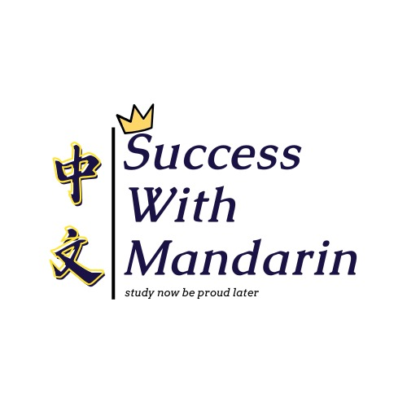

Buat sekolah & kuliah
Bangun fondasi Mandarin dan pelajari materi sesuai kurikulum kelas yang kamu pilih.

Success withBelajar Mandarin selangkah demi selangkah.
Untuk sekolah, kuliah, karier, atau sekadar
berani memulai percakapan pertama.
Dari pelajar sampai profesional, setiap orang punya alasan untuk mulai. Temukan jalur belajar yang sesuai tujuanmu bersama Success with Mandarin, bagian dari Kemix Academy.
Bangun fondasi Mandarin dan pelajari materi sesuai kurikulum kelas yang kamu pilih.
Tambah keterampilan bahasa untuk membuka percakapan dan kemungkinan baru.
Dari penasaran jadi kebiasaan. Mulai memahami kosakata dan percakapan sehari-hari.
Pilih program, format kelas, dan ritme belajarmu.
Belum yakin? Kita cari yang cocok bareng.
Dua pilihan, sama-sama 3 jam belajar per minggu. Harga paket tetap sama.
Pilih HSK atau TOCFL, lalu tentukan format kelas dan ritme belajar.
Ceritakan tujuanmu. Kita cocokkan level, format, dan jadwalnya.
Terima detail biaya dan pendaftaran sebelum memulai kelas.
Pilih Beginner atau Advanced untuk pelajar HSK 5.
Masing-masing 10 pertanyaan, tanpa timer.
Temukan kata baru—apa pun skormu.
Pertanyaan lainnya?
Kami siap bantu lewat WhatsApp.
Bisa! HSK 1 bisa menjadi titik awal untuk pemula. Konsultasikan pengalaman dan tujuanmu supaya kami dapat membantu memilih kelas yang sesuai.
Keduanya merupakan jalur ujian kemampuan Mandarin yang berbeda. Ceritakan tujuan studi atau kebutuhanmu lewat WhatsApp agar kami bisa membantu memilih kurikulum yang tepat.
Jam tersedia Senin–Jumat, pukul 17.30–21.30. Kamu bisa memilih 2× seminggu dengan 1,5 jam per sesi atau 3× seminggu dengan 1 jam per sesi. Kelas HSK tersedia dalam format Private 1-on-1 atau Private Group 2–4 orang. Hari, waktu, zona waktu, dan platform kelas dikonfirmasi saat konsultasi.
Jumlah sesi mengikuti total jam paket dan ritme pilihanmu. Paket 24 jam: 16 sesi × 1,5 jam atau 24 sesi × 1 jam. Paket 36 jam: 24 sesi × 1,5 jam atau 36 sesi × 1 jam. Paket 48 jam: 32 sesi × 1,5 jam atau 48 sesi × 1 jam. HSK 4A, 4B, 5A, dan 5B adalah paket terpisah; harga yang ditampilkan berlaku untuk bagian yang dipilih.
Semua harga berlaku per orang. Private Group berisi 2–4 orang; harga pada kartu bukan harga total satu grup. Ketersediaan grup dan jadwal bersama dikonfirmasi melalui WhatsApp.
Ya, free e-book dan sertifikat termasuk dalam paket. Detail penerbit serta ketentuan memperoleh sertifikat akan diinformasikan saat pendaftaran. Sertifikat kursus bukan sertifikat ujian resmi HSK atau TOCFL.
Metode pembayaran, masa berlaku paket, aturan perubahan jadwal, serta pembatalan akan dikonfirmasi melalui WhatsApp sebelum pendaftaran.
Yuk, temukan kelas Mandarin yang pas untukmu.